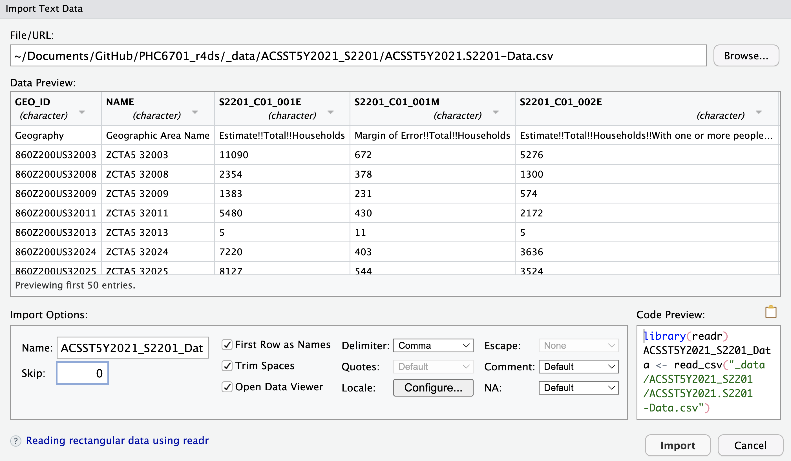

library(tidyverse)Lesson 8: Importing Tidy Data
Review
What did we learn last class?
- Lists
- Tibbles and Data Frames
- Positional Subsetting
- Relational Subsetting
- Named Subsetting
Overview
In this lesson, we will cover the following:
- Find some raw data
- Reading in flat text / CSV files
- Tibbles and “tidy” data
- Writing flat text / CSV files
- The pipe (
%>%) operator
Reading, Videos, and Assignments
- Watch: https://www.youtube.com/playlist?list=PLHKz7LkI0oR1Qy90NsN3A-4d3kiTh8Mra
- Read:
- Read the “Data Import” chapter of R4DS (https://r4ds.hadley.nz/data-import.html)
- Read the note on the “Pipe” operator from R for Epidemiology, but note that their pipe operator is a different symbol (
|>instead of%>%): https://www.r4epi.com/using-pipes
- Do:
- Complete the exercises from the “Data Import” chapter
- Install the “nycflights13” package
Example Data
When you use the RStudio IDE, you have access to a point-and-click data import guide for data files in many different forms. Such forms include tab-seperated, fixed-width, .csv, Stata, SAS, SPSS, Excel, and many others. A word of caution: you should practice importing the your data with the read_fwf(), read_delim, or read_csv functions (from the readr package) using the point-and-click RStudio interface. At each import, copy the code you build in the interactive window into a script so that you can see how the functions work. Once you are familiar with how these functions treat your data, then you can start writing the readr functions directly within a script instead of using the point-and-click RStudio IDE importing steps.
If you have never imported data before, this can be one of the most challenging tasks in data science. Also, you should read the “Importing Data” Chapter of R for Data Science, which covers importing data from a variety of sources. I have seen many problems in code because a tiny little piece of data was imported incorrectly, and this mistake wormed its way through an entire analysis. Don’t let this happen to you.
Example Data: Food Stamp Usage by ZIP Code
In order to plot food stamp usage by ZIP code, we first need data.
Miami-Dade and Broward County ZIP Codes
All of the ZIP codes in Broward and Miami Data counties and are online: https://www.zip-codes.com/county/fl-broward.asp and https://www.zip-codes.com/county/fl-miami-dade.asp, respectively. They are stored in tables that look like this: 
Exercise
For Miami-Dade and Broward counties, go to the websites above, highlight all the data in the table, copy it, paste it into a basic text editor (like Notepad or TextEdit), and save it into your directory for this class in your “data” folder (or whatever you named the folder for your data).
You will end up with a .txt file that should look like this: 
Food Stamps by ZIP Code
For data on households receiving Supplemental Nutrition Assistance Program (SNAP) benefits, we check with the US Census Bureau: https://data.census.gov/table
Exercise: Download SNAP Data by ZIP
Download the ACS data on food stamp benefits by ZIP code (you may need to disable your pop-up blocker first):
- Under the “Geography” Filter heading, choose the option labelled “ZIP Code Tabulation Area”. Select the state of Florida, then check the box “All 5-digit ZIP Code Tabulation Areas fully/partially within Florida”.
- Under the “Topics” Filter heading, choose the option labelled “Income and Poverty”. Click the “Income and Earnings” section of the menu, and check the box for “SNAP/Food Stamps”.
- You should see about 2 dozen resulting data table names. One of them (hopefully near the top) will be called “S2201FOOD STAMPS/SUPPLEMENTAL NUTRITION ASSISTANCE PROGRAM (SNAP)”. Click this table. The data preview pane will probably say “Table is too large to display”.
- Click “DOWNLOAD TABLE”, select the most recent year in the “Table Vintages” pop-up, and click “DOWNLOAD .CSV”. This will download a zipped file called
ACSST5Y2021.S2201_<your current date and time>.zip. - Unzip the folder, and rename it to
ACSST5Y2021_S2201/. There are three files in this folder:ACSST5Y2021.S2201-Column-Metadata.csvACSST5Y2021.S2201-Data.csvACSST5Y2021.S2201-Table-Notes.txt
- Save it into your directory for this class in your
data/folder (or whatever you named the folder for your data).
The first few rows and columns of the data file should look like this:
Notice that the NAME column contains the ZIP codes.
Reading in Flat / CSV Data
We finally have some raw data files on our data directory: two .txt files and one .csv file. While there are purely command-driven importing tools in R, we will discuss importing data with the RStudio (integrated development environment) IDE (graphical user interface) GUI first. In the top-right pane of the IDE, there is a menu of buttons to import different types of data.
Notice that we can import Excel, SAS, Stata, or SPSS data files, or we can import any text-based file with the From Text (readr)... button.
The readr Package
The readr package (https://cran.r-project.org/web/packages/readr/README.html) is the data import package of the tidyverse. If you want a good overview of how to use this package, read the “Importing Data” chapter of R for Data Science. We’ll load the tidyverse package suite now.
Package Goals
The readr package has three main goals:
- Be faster than the
base::package reading functions (read.csv,read.delim,read.fwf, etc.). - Import data as a tibble, so that we get the benefits of using tibbles, and we don’t mess up row and column names. For more on the tibble object, read their vignette: https://cran.r-project.org/web/packages/tibble/vignettes/tibble.html
- Operate similarly on all operating systems.
The Main Function(s)
There is one main file-reading function in the readr package, and two extensions of this function for commonly-occuring data formats (there are obviously more functions than just these three, but knowing how two of these three work will help you import the majority of data files you will see in practice).
read_delim: read any text-based delimited file intoRas a tibble.read_csv: an extension ofread_delimdesigned to make reading.csvfiles easy.read_tsv: an extension ofread_delimdesigned to make reading tab-delimited.txtfiles easy.
Because these functions import data as a tibble (“table” + “data frame”), you should try to store data files such that each entry of a column is of the same atomic type (all character, numeric, logical, etc.).
Read a .csv File with read_csv
In the “Import Dataset” drop-down menu, select From Text (readr).... In the “Import Text Data” pop-up window, click “Browse” to find and open your data. If you are using an RStudio project, then the “Browse” file finder should open directly to your directory for this class, and the data directory where you saved all three data files should be visible. Select the ACS data .csv file and click “Open”. You should see this window (your “File path” field will be different):

There is a lot of stuff going on in this window! Let’s unpack all of our options:
The “Data Preview” pane shows you an Excel-style view of the first few rows and columns of your data:
- The column names were imported correctly.
- The
readrpackage identifies the data type for each column by looking at the first 1000 rows (notice here that everything is a character; more on this shortly). - The down-arrow next to the column name lets you manually override
readr’s best guess for the column data type, as well as include, skip, or include only the column:

The “Import Options” pane allows you more direct control over how the data file is imported:
- “Name” — what name do you want to give the data tibble in the working directory? Often, the file itself has a long name, so it’s better to name the tibble saved in your
Renvironment a shorthand version. - “Skip” — skip reading the first rows of the file. This is helpful if you have metadata in the first few rows of the file, and the data itself doesn’t start until later. NOTE: because there are two rows of “header” information, we will have to set
skip = 1for this data. - Check Box Options — these do what they say they do.
- “Delimiter: Comma” — this drop-down menu allows you to switch among commas, tabs, semicolons, white space, or other delimiters. The
readrpackage correctly identified that our.csvfile was comma-delimited. - “NA” — how are missing values coded in your data? The drop-down menu has only a few options, but have more flexibility by interacting with the code itself (more on that in the next lesson).
- “Name” — what name do you want to give the data tibble in the working directory? Often, the file itself has a long name, so it’s better to name the tibble saved in your
The “Code Preview” pane shows you the results of all of the options you specified. Here is what the “Import Options” and “Code Preview” panes look like for the ACS SNAP
.csvdata:
The “Code Preview” pane shows what code will be ran automatically when I click the “Import” button in that window. Specifically, I’ve named the incoming data object FL_allZIPs, and I’ve turned off the automatic View() command. Also, notice that because readr identified that the data file was a .csv file, the read_csv() function was selected automatically. We click “Import” and this code runs for us:
FL_allZIPs <- read_csv(
"../_data/ACSST5Y2021_S2201/ACSST5Y2021.S2201-Data.csv",
skip = 1
)New names:
Rows: 1013 Columns: 459
── Column specification
──────────────────────────────────────────────────────── Delimiter: "," chr
(236): Geography, Geographic Area Name, Estimate!!Total!!Households!!HOU... dbl
(222): Estimate!!Total!!Households, Margin of Error!!Total!!Households, ... lgl
(1): ...459
ℹ Use `spec()` to retrieve the full column specification for this data. ℹ
Specify the column types or set `show_col_types = FALSE` to quiet this message.
• `` -> `...459`
Exercise
Import the SNAP data into R.
Read a Tab-Delimited .txt File with read_tsv
Now that we have a decent idea of how the read_csv function works, we can easily read in the Miami-Dade and Broward ZIP code files with the read_tsv function—it has almost the same syntax! Note: you will have to change the file path to match where your data is stored; mine is stored in a subfolder called _data/.
miamidade_ZIPs <- read_tsv("../_data/miamidade_ZIP_codes.txt")Rows: 127 Columns: 6
── Column specification ────────────────────────────────────────────────────────
Delimiter: "\t"
chr (5): ZIP Code, Classification, City, Timezone, Area Code(s)
num (1): Population
ℹ Use `spec()` to retrieve the full column specification for this data.
ℹ Specify the column types or set `show_col_types = FALSE` to quiet this message.broward_ZIPs <- read_tsv("../_data/broward_ZIP_codes.txt")Rows: 88 Columns: 6
── Column specification ────────────────────────────────────────────────────────
Delimiter: "\t"
chr (5): ZIP Code, Classification, City, Timezone, Area Code(s)
num (1): Population
ℹ Use `spec()` to retrieve the full column specification for this data.
ℹ Specify the column types or set `show_col_types = FALSE` to quiet this message.Notice the messages readr gives us when importing data: all the columns (except for population) were imported as character columns.
Exercise
Import the Miami-Dade and Broward county ZIP code data into R.
Looking ahead…
Notice that the ZIP code column in the Miami-Dade and Broward data sets do not exactly match the ZIP code column in the ACS SNAP data. In order to match these data sets, we will need tools that help us deal with tibbles (coming up in the dplyr lesson) and tools that help us deal with character strings (coming up in the stringr lesson). We will see these data sets again.
Tibbles and Tidy Data
So far this semester, we have seen and used data in a tidy form (recall the mpg dataset), but we have had very little discussion of what this form entails and why it is important. We draw our information from the “Tidying Data” chapter of R for Data Science.
Data Format Example: Tuberculosis Cases
Consider data with counts of tuberculosis (TB) cases for three countries measured over a single 10-year interval. What could our data look like?
| Country | Year | Rate |
|---|---|---|
| “Afghanistan” | 1999 | “745/19987071” |
| “Afghanistan” | 2000 | “2666/20595360” |
| “Brazil” | 1999 | “37737/172006362” |
| “Brazil” | 2000 | “80488/174504898” |
| “China” | 1999 | “212258/1272915272” |
| “China” | 2000 | “213766/1280428583” |
Notice that this table has all the information we need: the name of the country, the year of the demographic measurement, the number of TB cases in that year for each country, and the total population in the country at that time. The data is in a good format for humans. However, the information in this data is not immediately accessible by the computer.
Exercises
- Discuss with your neighbour about why this data may not be useful to us in R.
- Why are the rate values in quotes?
What is Tidy Data?
Before we try to “tidy up” the data set above, we need a grammar for data. Specifically, mathematical convention holds that:
- Each variable must have its own column.
- Each observation must have its own row.
- Each value must have its own cell.
If you would like the justification for these rules, please see Wickham (2014). Visually, tidy data has this form:

Tidy the TB Data
Now that we have some rules, we can tidy up the TB data. Honestly, it was already pretty close; we simply need to split the “Rate” column into its numerator and denominator (this allows us to remove the quotes):
| Country | Year | Cases | Population |
|---|---|---|---|
| “Afghanistan” | 1999 | 745 | 19987071 |
| “Afghanistan” | 2000 | 2666 | 20595360 |
| “Brazil” | 1999 | 37737 | 172006362 |
| “Brazil” | 2000 | 80488 | 174504898 |
| “China” | 1999 | 212258 | 1272915272 |
| “China” | 2000 | 213766 | 1280428583 |
Why Tidy Data
Most of my work as a data scientist is extracting or cleaning data. As such, here are the reasons I use the tidy data format:
- It is mathematically consistent. When we perform calculations with statistics, the notation of matrix algebra and calculus assume that the observations are in the rows of a matrix while the measurements are in its columns.
- Keeping the same structure for all raw data means I don’t waste time re-writing code to work with data in different formats. If I write code that works for one data set, it will usually work for another data set with only slight modifications.
- Storing measurements in columns of a tibble means that R treats the data set as a vector of atomic vectors (recall that a tibble is actually a list, and as such it is a non-atomic vector of other vectors). Because of this, we get to take advantages of R’s strength as a vectorised language.
Writing Tibbles to Flat / CSV Data Files
While the county ZIP code data sets are both in flat text files, we may want to save them as CSV files for future use. If the function read_csv() reads in (or imports) a .csv file as a tibble object, then write_csv() should write a tibble object to a .csv file.
write_csv(x = miamidade_ZIPs, file = "../_data/miamidade_ZIP_codes.csv")
write_csv(x = broward_ZIPs, file = "../_data/broward_ZIP_codes.csv")
Exercises
- Check the directory for the files that you wrote. Did these CSV files write correctly?
- Inspect the help file for
write_csv()andwrite_delim(). What are some of the other file formats you can save your data in? - Can you think of a situation where using comma as the delimiter would not be a good idea?
- For next class, install the
nycflights13package.
Aside: The Pipe Operator
When writing scripts, I strongly recommend the use of the %>% (pipe) operator (from the magrittr package—included in dplyr and the tidyverse). Pipe operators turn
\[ f(g(h(j(k(y, e), d), c), b), a) \]
into
\[ y \mapsto k(.,e) \mapsto j(.,d) \mapsto h(.,c) \mapsto g(.,b) \mapsto f(.,a), \]
which turns into the following code:
y %>% k(e) %>% j(d) %>% h(c) %>% g(b) %>% f(a).You get the pipe operator any time you load the tidyverse package suite. Insert a pipe in your code with the keyboard Ctrl + Shift + M (Windows) or Cmd + Shift + M (Mac).
library(tidyverse)
x <- rnorm(30)
# These two commands are identical:
# 1.
t.test(x, mu = 1)
# 2.
x %>% t.test(mu = 1)The operations are then considerably easier to follow. Consider the following code (from a nice University of Cincinnati article), before and after the use of the pipe operator:
# Before
sum(select(filter(babynames,sex=="M",name=="Taylor"),n))
# After
babynames %>%
filter(sex == "M", name == "Taylor") %>%
select(n) %>%
sum()The pipe operator makes chained or nested code much easier to read. However, this clarity comes with a drawback: the pipe operator uses non-standard evaluation, which means that R package development with the pipe operator can be more challenging. However, do not let this discourage you from using the pipe operator in your analysis scripts—I use it all the time.
Exercises
Install and load the nycflights13 package. Re-write the following code with the pipe operator. We will learn what this code actually does next lesson, so don’t worry about it for now. Hint: you may want to write out these function calls on paper to make sense of it all. Here is the code to re-write:
arrange(mutate(summarise(group_by(flights, dest), delay = mean(arr_delay, na.rm = TRUE)), resid_delay = delay - mean(delay, na.rm = TRUE)), resid_delay)Confirm that the results before and after are the same.